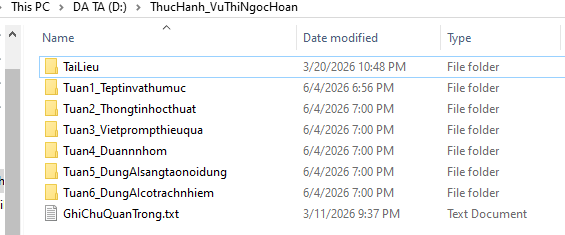

Tuần 1
Thực hành Quản lý Tệp và Thư mục trên Hệ điều hành
Chi tiết quy trình thực hiện
1
Mở File Explorer & Truy cập ổ đĩa
Thực hành thao tác mở công cụ quản lý tệp và truy cập vào không gian lưu trữ.
- Mở File Explorer: Nhấn tổ hợp phím Windows + E hoặc nhấp vào biểu tượng thư mục màu vàng trên thanh tác vụ.

- Truy cập ổ đĩa/thư mục: Ở cột bên trái, nhấp vào This PC, sau đó nhấp đúp vào một ổ đĩa không phải ổ hệ thống (ví dụ: ổ D: hoặc E:). Nếu chỉ có ổ C:, hãy vào thư mục Documents.

2
Tạo và Quản lý Thư mục
Các bước tạo thư mục làm việc cá nhân và thư mục con.
- Tạo thư mục mới: Nhấp chuột phải vào một khoảng trống → chọn New → Folder. Đặt tên thư mục là ThucHanh_hotensinhvien (ví dụ: ThucHanh_NguyenVanA). Nhấn Enter.


- Vào thư mục vừa tạo: Nhấp đúp vào thư mục ThucHanh_NguyenVanA.

- Tạo thư mục con: Trong thư mục ThucHanh_NguyenVanA, nhấp chuột phải → New → Folder. Đặt tên là TaiLieu.

3
Tạo và Quản lý Tệp tin
Tạo tệp tin mới và thay đổi tên tệp tin.
- Tạo tệp tin văn bản: Nhấp chuột phải vào khoảng trống → New → Text Document. Đặt tên là GhiChu.txt. Nhấn Enter.


- Đổi tên tệp tin: Nhấp chuột phải vào tệp GhiChu.txt → chọn Rename. Đổi tên thành GhiChuQuanTrong.txt. Nhấn Enter.

4
Sao chép và Di chuyển tệp tin
Thực hành các thao tác Copy/Paste và Cut/Paste.
Sao chép tệp tin (Copy & Paste):
- Nhấp chuột phải vào tệp GhiChuQuanTrong.txt → chọn Copy (hoặc chọn tệp rồi nhấn Ctrl + C).

- Nhấp đúp vào thư mục TaiLieu, nhấp chuột phải vào khoảng trống bên trong → chọn Paste (hoặc nhấn Ctrl + V). Bây giờ bạn có một bản sao của tệp trong thư mục TaiLieu.

Di chuyển tệp tin (Cut & Paste):
- Quay lại thư mục ThucHanh_NguyenVanA. Tạo một tệp mới tên là DiChuyen.txt.

- Nhấp chuột phải vào tệp DiChuyen.txt → chọn Cut (hoặc chọn tệp rồi nhấn Ctrl + X).

- Nhấp đúp vào thư mục TaiLieu, nhấp chuột phải vào khoảng trống → chọn Paste (hoặc nhấn Ctrl + V). Tệp gốc đã biến mất khỏi vị trí cũ và chỉ còn ở vị trí mới.


5
Xóa và Khôi phục tệp tin
Thực hành thao tác xóa vào Thùng rác, xóa vĩnh viễn và khôi phục tệp.
- Xóa tệp tin: Trong thư mục TaiLieu, nhấp chuột phải vào tệp GhiChuQuanTrong.txt → chọn Delete. Tệp sẽ được chuyển vào Thùng rác (Recycle Bin).


- Xóa vĩnh viễn: Chọn tệp DiChuyen.txt, nhấn giữ phím Shift và nhấn phím Delete. Một cảnh báo sẽ hiện ra. Nếu đồng ý, tệp sẽ bị xóa vĩnh viễn mà không qua Thùng rác.


- Khôi phục từ Thùng rác (Tùy chọn): Tìm biểu tượng Recycle Bin trên màn hình nền, nhấp đúp để mở. Tìm tệp GhiChuQuanTrong.txt đã xóa, nhấp chuột phải vào nó và chọn Restore. Tệp sẽ quay trở lại vị trí ban đầu.


6
Quy tắc đặt tên tệp tin và thư mục
Chuẩn hóa cách đặt tên để quản lý dữ liệu gọn gàng, chuyên nghiệp và tránh nhầm lẫn bài giảng với bài tập.
- Quy tắc 1: Tên thư mục và tệp dùng tiếng Việt không dấu, chữ cái đầu viết hoa nối liền hoặc phân tách bằng dấu gạch dưới (_); không dùng khoảng trắng và ký tự đặc biệt.
- Quy tắc 2: Chuẩn hóa định dạng tên tệp nộp bài theo cấu trúc thống nhất (diện rộng trước).
- Quy tắc 3: Tách riêng thư mục tài liệu học tập/bài giảng và thư mục sản phẩm thực hành cá nhân.
Lý do: Quản lý theo tư duy chức năng, tránh lẫn dữ liệu, tăng tính thẩm mỹ và chuyên nghiệp khi làm việc với tệp.
